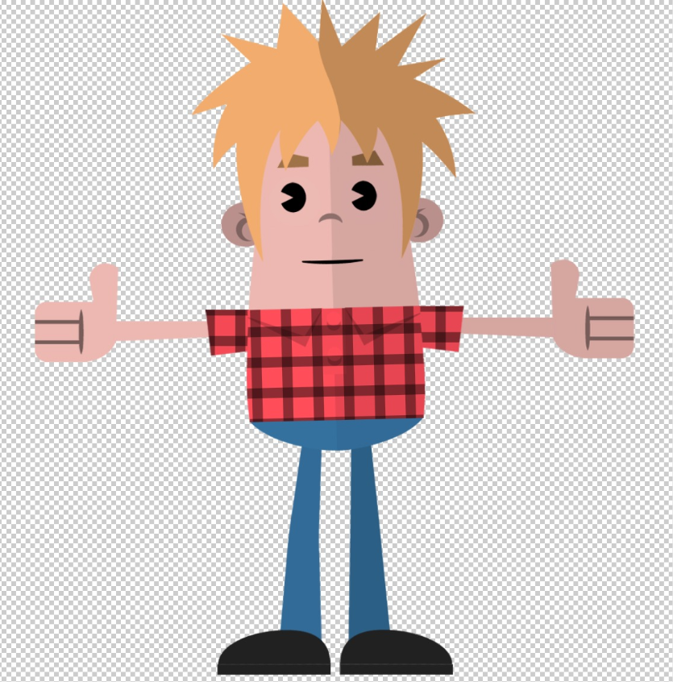
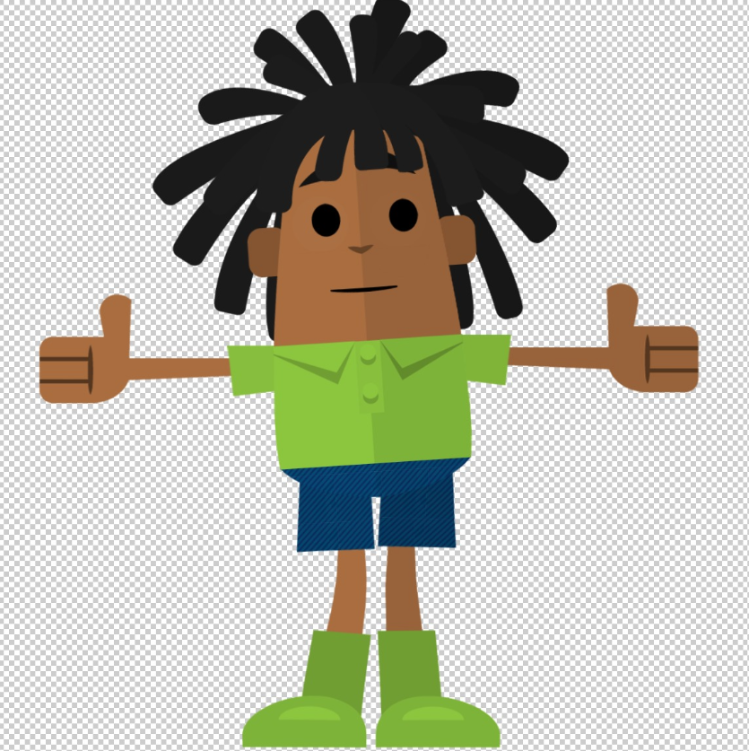

Puppets animeren
Ik maak interactieve “puppets” met Adobe Character Animator, zowel op basis van bestaande presets als volledig op maat ontworpen en gerigged. Deze puppets zijn breed inzetbaar, bijvoorbeeld voor bedrijfscommunicatie, social media content of explainervideo’s. Zodra een puppetbestand is opgezet, kan deze eenvoudig tot leven worden gebracht met body tracking. Hierdoor kan een performer real-time animatie opnemen, die vervolgens door iemand met video-editing skills verder kan worden verwerkt tot een eindproduct.



Project Vinny VISTA
Voor dit project heb ik het karakter Vinny VISTA ontwikkeld, dat flexibel en direct inzetbaar is in
videoformats. Ik heb de body tracking verzorgd en aan het einde handmatige animaties toegevoegd voor
extra nuance en expressie.
Daarnaast heb ik de volledige video-edit gedaan en de achtergrond geïllustreerd. Het beeldmateriaal
dat in de tv zichtbaar is, is aangeleverd door de opdrachtgever en door mij in de scène verwerkt. Ik
heb zelf geen beelden gefilmd en geen AI content gegenereerd.
De onderstaande video is
gemaakt om het doorstroomblok van het Vista College uit te leggen.